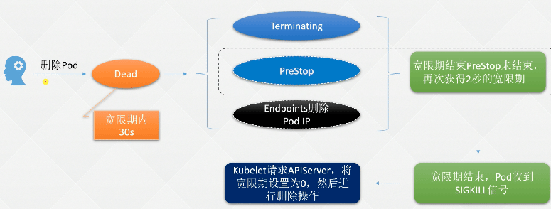

Kubernetes: k8s 基础概念
- TAGS: Kubernetes
docker基础
具体的参考，docker篇，这里只是补充
多阶段小镜像
#编译环境，生成二进制文件 FROM golang:1.14.2-alpine3.11 as builder MAINTAINER jett <jettjia@qq.com> ENV GO111MODULE=on RUN apk update && \ apk upgrade && \ apk add git gcc libc-dev linux-headers RUN go get -ldflags "-X main.VERSION=$(date -u +%Y%m%d) -s -w" github.com/xtaci/kcptun/client && go get -ldflags "-X main.VERSION=$(date -u +%Y%m%d) -s -w" github.com/xtaci/kcptun/server #只拷贝所需要的二进制文件 FROM alpine:3.11 RUN apk add --no-cache iptables COPY --from=builder /go/bin /bin EXPOSE 29900/udp EXPOSE 12948
这个例子，是以golang 1.14 进行打包的，其实主要命令就是go get 会生成文件到GOPATH="/home/chunk/go"，比如以上dockerfile的go get会生成两个文件到GOPATH的bin
ls /home/chunk/go/bin/ client server
多阶段构建的目的只要就是缩小docker容器的体积，最终打出来的镜像以FROM alpine:3.11为准，关键在于 COPY –from=builder /go/bin /bin， 只拷贝了/go/bin 整个目录到/bin，即系client和server这个两个二进制文件，从而避免把git gcc libc-dev linux-headers这些包也打入镜像，从而达到最小镜像。
如何运行这个镜像
docker run -d -p 1505:1505 -p 29900:29900 xtaci/kcptun client -r xxx.xxx.xxx.xxx:29900 -l :1505 -key test -mtu 1400 -mode fast3
scratch镜像
更小的镜像，但是如果有依赖的话，尽量少用。可以用alpine
通过docker overlay2 目录名查找对应容器名
cd /var/lib/docker/overlay2/ du -s ./* | sort -rn | more oid="40235d8989bfbc6b95cdb5c28c1224728138ce746f0c81ca68a9ef1782f33541" docker ps -q | xargs docker inspect --format '{{.State.Pid}}, {{.Id}}, {{.Name}}, {{.GraphDriver.Data.WorkDir}}' | grep $oid # 输出依次为，进程pid、容器ID、容器名、存储work路径，即可确定是哪个容器。 # diff 对应 容器 [root@ip-172-21-39-111 root]# pwd /var/lib/docker/overlay2/40235d8989bfbc6b95cdb5c28c1224728138ce746f0c81ca68a9ef1782f33541/diff/root [root@ip-172-21-39-111 root]# du -sh * 1.9G logs 24K nacos # 对应容器中 bash-4.2# cd /root/ bash-4.2# du -sh * 1.9G logs 24K nacos
为什么选择 k8s
裸容器的问题
- 宿主机宕机容器无法自动恢复
- 程序级健康检查依旧不到位
- 程序的扩容、部署、回滚和更新依旧不够灵活
- 端口问题并未得到解决，容器多时不好管理并存在端口冲突问题
容器编排应运而生
- 轻松管理成千上万的业务容器
- 全自动容灾机制
- 全自动扩缩容、回滚
- 原生服务发布、负载均衡
- 更加灵活方便的健康检查
k8s基础
k8s介绍
k8s是一个全新的基于容器技术的分布式架构解决方案，并且是一个一站式的完备的分布式系统开发和支撑平台。
使用架构
基础组件概述
Master节点组件
Master节点：整个集群的控制中枢。 组件有：kube-apiserver、kube-controller-manager、kube-scheduler
- kube-apiserver: 集群的控制中枢，各个模块之间信息交互都需要经过 kube-apiserver，并将集群状态和信息存储到分布式键-值存储系统 etcd 集群中。同时它也是集群管理、资源配置、整个集群安全机制的入口，为集群各类资源对象提供增删改查以及 watch 的 REST API 接口。
- kube-scheduler：集群 pod 的调度中心，主要是通过调试算法将 pod 分配到最佳的 node 节点，它通完 apiserver 监听所有 pod 的状态，一旦发现新的未被调试到任何 node 节点的 pod （PodSpec.NodeName 为空），就会根据一系列策略选择最佳节点进行调度。
- kube-controller-manager: 集群的状态管理器，保证 Pod 或其他资源到达期望值。当集群中某个 pod 副本数或其它资源因故障和错误导致无法正常运行，没有达到设定的值时， Controller Manager 会尝试自动修复并使其达到期望状态。
- etcd：键值数据库，保存一些集群的信息。生产环境部署奇数个节点，3个以上，推荐使用ssd磁盘。
控制节点的状态
apiserver 是无状态的。
scheduler 和 controller manager 是有选主机制的，都是有状态的服务。主从信息保存在
- 1.20 以前是在 kube-system 的 ep 中注释了的主节点信息。`kubectl get ep -oyaml -n kube-system`
- 1.20 之后是在 kube-system 的 leases 中。`kubectl get leases -n kube-system`
[jasper.xu@ip-172-21-39-120 ~]$ kubectl get leases -n kube-system NAME HOLDER AGE cloud-controller-manager ip-10-0-100-120.ap-south-1.compute.internal_d235d047-c662-490a-bba7-9930f8e15b49 42d cloud-provider-extraction-migration ip-10-0-100-120.ap-south-1.compute.internal_a07c8151-deae-4d3e-9616-583c073290a2 34d cluster-autoscaler cluster-autoscaler-66cffcc58c-rnk94 55d kube-controller-manager ip-10-0-100-120.ap-south-1.compute.internal_a07c8151-deae-4d3e-9616-583c073290a2 594d kube-scheduler ip-10-0-100-120.ap-south-1.compute.internal_73c79638-c5ea-46c8-95aa-adb511ded71f 594d
Node节点组件
Worker、Node节点、Minion节点，Node节点组件是指运行在Node节点上，负责具体 Pod 运行时环境的组件。
- kubelet: 负责与 Master 节点通信，并管理节点上的 Pod，对容器进行健康检查及监控，同时负责上报节点和节点上面 pod 状态。
- kube-proxy: 负责 Pod 之间的通信和负载均衡，将指定的流量分发到后端正确的机器上。
- Runtime：负责容器管理
- CoreDNS：用于 k8s 集群内部 Service 解析，可以让 pod 把 Service 名称解析成 Service 的 ip，然后通过 Service 的 IP 地址进行连接到对应的应用上。
- Calico：符合 CNI 标准的一个网络插件，它负责给每个 pod 分配一个不会重复的 Ip，并且把每个节点当做一个"路由器"，这样一个节点的 pod 就可以通过 IP 地址访问到节点的 pod。
[root@k8s-master01 ~]# netstat -lntp | grep kube-proxy tcp 0 0 0.0.0.0:31204 0.0.0.0:* LISTEN 1261/kube-proxy tcp 0 0 127.0.0.1:10249 0.0.0.0:* LISTEN 1261/kube-proxy tcp6 0 0 :::10256 :::* LISTEN 1261/kube-proxy [root@k8s-master01 ~]# curl 127.0.0.1:10249/proxyMode ipvs
ipvs：监听 Master 节点增加和删除 service 以及 endpoint 的消息，调用 Netlink 接口创建相应的 IPVS 规则。通过IPVS规则，将流量转发至相应的Pod上。
iptables: 监听 Master 节点增加和删除 service 以及 endpoint 的消息，对于每一个 Service，他都会创建一个 iptables规则，将 service 的 clusterIP 代理到后端对应的 Pod。
# ipvs中，dashboard的演示. [root@k8s-master01 ~]# ipvsadm -ln IP Virtual Server version 1.2.1 (size=4096) Prot LocalAddress:Port Scheduler Flags -> RemoteAddress:Port Forward Weight ActiveConn InActConn TCP 172.17.0.1:31204 rr -> 172.169.244.196:8443 Masq 1 0 0 TCP 172.169.244.192:31204 rr -> 172.169.244.196:8443 Masq 1 0 0 TCP 10.4.7.107:31204 rr -> 172.169.244.196:8443 Masq 1 0 0 TCP 10.4.7.236:31204 rr -> 172.169.244.196:8443 Masq 1 1 0 TCP 10.96.0.1:443 rr -> 10.4.7.107:6443 Masq 1 0 0 -> 10.4.7.108:6443 Masq 1 0 0 -> 10.4.7.109:6443 Masq 1 1 0 TCP 10.96.0.10:53 rr -> 172.161.125.4:53 Masq 1 0 0 TCP 10.96.0.10:9153 rr -> 172.161.125.4:9153 Masq 1 0 0 TCP 10.98.15.94:443 rr -> 172.169.244.196:8443 Masq 1 0 0 TCP 10.102.175.175:443 rr -> 172.171.14.195:4443 Masq 1 3 0 TCP 10.108.133.81:8000 rr -> 172.169.92.67:8000 Masq 1 0 0 TCP 127.0.0.1:31204 rr -> 172.169.244.196:8443 Masq 1 0 0 UDP 10.96.0.10:53 rr -> 172.161.125.4:53 Masq 1 0 0 [root@k8s-master01 ~]# kubectl get svc -n kubernetes-dashboard NAME TYPE CLUSTER-IP EXTERNAL-IP PORT(S) AGE dashboard-metrics-scraper ClusterIP 10.108.133.81 <none> 8000/TCP 12h kubernetes-dashboard NodePort 10.98.15.94 <none> 443:31204/TCP 12h [root@k8s-master01 ~]# kubectl get po -n kubernetes-dashboard -owide NAME READY STATUS RESTARTS AGE IP NODE NOMINATED NODE READINESS GATES dashboard-metrics-scraper-7645f69d8c-6ckjn 1/1 Running 2 12h 172.169.92.67 k8s-master02 <none> <none> kubernetes-dashboard-78cb679857-lrjkb 1/1 Running 2 12h 172.169.244.196 k8s-master01 <none> <none>
其它组件：
- Calico: 符合 CNI标准的网络插件，给每个 Pod 生成一个唯一的IP地址，并且把每个节点当作一个路由器。
[root@k8s-master01 ~]# kubectl get po -n kube-system -owide NAME READY STATUS RESTARTS AGE IP NODE NOMINATED NODE READINESS GATES calico-kube-controllers-5f6d4b864b-rnw7z 1/1 Running 2 13h 10.4.7.109 k8s-master03 <none> <none> calico-node-78fgh 1/1 Running 2 13h 10.4.7.111 k8s-node02 <none> <none> calico-node-bmm4m 1/1 Running 2 13h 10.4.7.110 k8s-node01 <none> <none> calico-node-lz5pw 1/1 Running 2 13h 10.4.7.109 k8s-master03 <none> <none> calico-node-ndhdr 1/1 Running 2 13h 10.4.7.107 k8s-master01 <none> <none> calico-node-pqd7s 1/1 Running 2 13h 10.4.7.108 k8s-master02 <none> <none> coredns-867d46bfc6-h9j7n 1/1 Running 2 13h 172.161.125.4 k8s-node01 <none> <none> metrics-server-595f65d8d5-gzwxf 1/1 Running 2 13h 172.171.14.195 k8s-node02 <none> <none> route -n
Cilium 插件引入了 eBPF 机制可以原生的替换 kube-proxy
- CoreDNS: 用于kubernetes集群内部 service的解析，可以让 Pod 把service 名称解析成IP地址，然后通过 service的IP地址进行链接到对应的应用上。
[root@k8s-master01 ~]# kubectl get svc -n kube-system NAME TYPE CLUSTER-IP EXTERNAL-IP PORT(S) AGE kube-dns ClusterIP 10.96.0.10 <none> 53/UDP,53/TCP,9153/TCP 13h metrics-server ClusterIP 10.102.175.175 <none> 443/TCP 13h
- Docker: 容器引擎，负责对容器的管理。
Pod
什么是Pod
Pod 是 Kubernetes 中最小的单元，它由一组、一个或多个容器组成，每个 Pod 还包含了一个 Pause 容器。
Pause 容器是 Pod 的父容器，主要负责僵尸进程的回收管理，同时通过 Pause 容器可以使同一个 Pod 里面的多个容器共享存储、网络、PID、IPC 等，容器之间可以使用 localhost:port 相互访问，可以使用 volume 等实现数据共享。根据 docker 的构造，pod 可被建模为一组具有共享名称空间、卷、ip 地址和 port 端口的容器。
说明：Pod 一般不直接操作，通过 Deployment、StatefulSet、DaemonSet 控制。
查看 pod
kubectl get po -n kube-system # po 是简写，还可以写成 pod 或 pods # 或者用 containd 工具 ctr -n k8s.io c ls
为什么要引入 pod
- 强依赖的服务需要部署在一起
- 多个服务需要协同工作
- 兼容其它 CRI 标准的运行时
定义一个 Pod
一份比较完整的yaml文件介绍
apiVersion: v1 # 必选，API的版本号
kind: Pod # 必选，类型Pod
metadata: # 必选，元数据
name: nginx # 必选，符合RFC 1035规范的Pod名称
namespace: default # 可选，Pod所在的命名空间，不指定默认为default，可以使用-n 指定namespace
labels: # 可选，标签选择器，一般用于过滤和区分Pod
app: nginx
role: frontend # 可以写多个
annotations: # 可选，注释列表，可以写多个
app: nginx
spec: # 必选，用于定义容器的详细信息
initContainers: # 初始化容器，在容器启动之前执行的一些初始化操作
- command:
- sh
- -c
- echo "I am InitContainer for init some configuration"
image: busybox
imagePullPolicy: IfNotPresent
name: init-container
containers: # 必选，容器列表
- name: nginx # 必选，符合RFC 1035规范的容器名称
image: nginx:latest # 必选，容器所用的镜像的地址
imagePullPolicy: Always # 可选，镜像拉取策略, IfNotPresent: 如果宿主机有这个镜像，那就不需要拉取了. Always: 总是拉取, Never: 不管是否存储都不拉去
command: # 可选，容器启动执行的命令，相当于 docker 里的 ENTRYPOINT。args 相当于 cmd
- nginx
- -g
- "daemon off;"
workingDir: /usr/share/nginx/html # 可选，容器的工作目录
volumeMounts: # 可选，存储卷配置，可以配置多个
- name: webroot # 存储卷名称
mountPath: /usr/share/nginx/html # 挂载目录
readOnly: true # 只读
ports: # 可选，容器需要暴露的端口号列表
- name: http # 端口名称
containerPort: 80 # 端口号
protocol: TCP # 端口协议，默认TCP
env: # 可选，环境变量配置列表
- name: TZ # 变量名
value: Asia/Shanghai # 变量的值
- name: LANG
value: en_US.utf8
resources: # 可选，资源限制和资源请求限制
limits: # 最大限制设置
cpu: 1000m
memory: 1024Mi
requests: # 启动所需的资源
cpu: 100m
memory: 512Mi
# startupProbe: # 可选，检测容器内进程是否完成启动。注意三种检查方式同时只能使用一种。
# httpGet: # httpGet检测方式，生产环境建议使用httpGet实现接口级健康检查，健康检查由应用程序提供。
# path: /api/successStart # 检查路径
# port: 80
readinessProbe: # 可选，健康检查。注意三种检查方式同时只能使用一种。
httpGet: # httpGet检测方式，生产环境建议使用httpGet实现接口级健康检查，健康检查由应用程序提供。
path: / # 检查路径
port: 80 # 监控端口
livenessProbe: # 可选，健康检查
#exec: # 执行容器命令检测方式
#command:
#- cat
#- /health
#httpGet: # httpGet检测方式
# path: /_health # 检查路径
# port: 8080
# httpHeaders: # 检查的请求头
# - name: end-user
# value: Jason
tcpSocket: # 端口检测方式
port: 80
initialDelaySeconds: 60 # 初始化时间
timeoutSeconds: 2 # 超时时间
periodSeconds: 5 # 检测间隔
successThreshold: 1 # 检查成功为2次表示就绪
failureThreshold: 2 # 检测失败1次表示未就绪
lifecycle:
postStart: # 容器创建完成后执行的指令, 可以是exec httpGet TCPSocket
exec:
command:
- sh
- -c
- 'mkdir /data/ '
preStop:
httpGet:
path: /
port: 80
# exec:
# command:
# - sh
# - -c
# - sleep 9
restartPolicy: Always # 可选，默认为Always，容器故障或者没有启动成功，那就自动该容器，Onfailure: 容器以不为0的状态终止，自动重启该容器, Never:
#nodeSelector: # 可选，指定Node节点
# region: subnet7
imagePullSecrets: # 可选，拉取镜像使用的secret，可以配置多个
- name: default-dockercfg-86258
hostNetwork: false # 可选，是否为主机模式，如是，会占用主机端口
volumes: # 共享存储卷列表
- name: webroot # 名称，与上述对应
emptyDir: {} # 挂载目录
#hostPath: # 挂载本机目录
# path: /etc/hosts
创建一个容器（maser01上）
[root@k8s-master01 ~]# cat > pod.yaml << EOF apiVersion: v1 # 必选，API的版本号 kind: Pod # 必选，类型Pod metadata: # 必选，元数据 name: nginx # 必选，符合RFC 1035规范的Pod名称 # namespace: default # 可选，Pod所在的命名空间，不指定默认为default，可以使用-n 指定namespace labels: # 可选，标签选择器，一般用于过滤和区分Pod app: nginx role: frontend # 可以写多个 annotations: # 可选，注释列表，可以写多个 app: nginx spec: # 必选，用于定义容器的详细信息 containers: # 必选，容器列表 - name: nginx # 必选，符合RFC 1035规范的容器名称 image: nginx:1.15.2 # 必选，容器所用的镜像的地址 imagePullPolicy: IfNotPresent # 可选，镜像拉取策略, IfNotPresent: 如果宿主机有这个镜像，那就不需要拉取了. Always: 总是拉取, Never: 不管是否存储都不拉去 command: # 可选，容器启动执行的命令 ENTRYPOINT, args --> cmd - nginx - -g - "daemon off;" workingDir: /usr/share/nginx/html # 可选，容器的工作目录 ports: # 可选，容器需要暴露的端口号列表 - name: http # 端口名称 containerPort: 80 # 端口号 protocol: TCP # 端口协议，默认TCP env: # 可选，环境变量配置列表 - name: TZ # 变量名 value: Asia/Shanghai # 变量的值 - name: LANG value: en_US.utf8 restartPolicy: Always # 可选，默认为Always，容器故障或者没有启动成功，那就自动该容器，Onfailure: 容器以不为0的状态终止，自动重启该容器, Never: EOF # 创建一个pod [root@k8s-master01 ~]# kubectl create -f pod.yaml pod/nginx created # 查看刚刚创建的Pod [root@k8s-master01 ~]# kubectl get po NAME READY STATUS RESTARTS AGE busybox 1/1 Running 4 17h nginx 1/1 Running 0 5m24s [root@k8s-master01 ~]# kubectl get po --show-labels NAME READY STATUS RESTARTS AGE LABELS busybox 1/1 Running 4 16h <none> nginx 0/1 Running 0 90s app=nginx,role=frontend # 删除一个po [root@k8s-master01 ~]# kubectl delete po nginx pod "nginx" deleted # 创建到指定的命名空间 [root@k8s-master01 ~]# kubectl create -f pod.yaml -n kube-public # 创建命名空间 kubectl create ns ns_name
修改 pod 内容器启动命令
查看语法用：kubectl explain pod.spec.containers
command 用来覆盖容器启动执行的命令 ENTRYPOINT, args 覆盖容器的 cmd
pod 状态及问题排查方法
https://kubernetes.io/zh-cn/docs/concepts/workloads/pods/pod-lifecycle/
取值 描述
- Pending（挂起） Pod 已被 Kubernetes 系统接受，但有一个或者多个容器尚未创建亦未运行。此阶段包括等待 Pod 被调度的时间和通过网络下载镜像的时间。可以通过 `kubectl describe` 查看处于 Pending 状态的原因。
- RunningPending（运行中） Pod 已经绑定到了某个节点，Pod 中所有的容器都已被创建。至少有一个容器仍在运行，或者正处于启动或重启状态。可以使用 `kubectl logs` 查看 pod 的日志。pod 可用必须是 READY前后一致且 STATUS 是 Running。
- Succeeded（成功） Pod 中的所有容器都已成功终止，并且不会再重启。可以使用 `kubectl logs` 查看 pod 的日志。
- Failed（失败） Pod 中的所有容器都已终止，并且至少有一个容器是因为失败终止。也就是说，容器以非 0 状态退出或者被系统终止。
- Unknown（未知） 因为某些原因无法取得 Pod 的状态。这种情况通常是因为与 Pod 所在主机通信失败。
- ImagePullBackOff 镜像拉取失败，一般是由于镜像不存在、网络不通或者需要登录认证引起的，可以使用 `describe` 命令查看原因。
- ErrImagePull 同上
- CrashLoopBackOff 容器启动失败，可以通过 `logs` 命令查看原因，一般为启动命令不正解，健康检查不过等。
- OOMKilled 容器内存溢出，一般是容器的内存 Limit 设置过小，或者程序本身有内存溢出，可以通过 `logs` 查看程序日志。
- Jvm 中堆内存和堆外内存大于 Limit 值。
- Terminating Pod 正在被删除，可以通过 `describe` 查看状态
- SysctlForbidden Pod 我自定义了内核配置，但 kubelet 没有添加内核配置或者配置的内核参数不支持，可以通过 `describe` 查看具体原因。
- Completed 容器内部进程主动退出，一般计划任务执行结束会显示该状态，此时可以通过 `logs` 查看容器日志。
- ContainerCreating Pod 正在创建，一般为正在下载镜像，或者有配置不当的地方，可能通过 `describe` 查看原因。
PS: Pod 的 phase 字段只有 Pending、Pending、Succeeded、Failed、Unknown，其余的为处于上述状态的原因，可以通过 kubectl get po xxx -lyaml 查看。
Pod 拉取镜像策略
通过 spec.containers[].imagePullPolicy 参数可以指定镜像的拉取策略，目前支持策略如下：
- Always 总是拉取，当镜像 tag 为 latest 时，且 imagePullPolicy 未设置，默认为 Always
- Nerver 不管是否存在都不会拉取
- IfNotPresent 镜像不存在时拉取镜像，如果 tag 为非 latest，且 imagePullPolicy 未设置，默认为 IfNotPresent
更改镜像拉取策略为 IfNotPresent
apiVersion: v1 # 必选，API的版本号
kind: Pod # 必选，类型Pod
metadata: # 必选，元数据
name: nginx # 必选，符合RFC 1035规范的Pod名称
# namespace: default # 可选，Pod所在的命名空间，不指定默认为default，可以使用-n 指定namespace
labels: # 可选，标签选择器，一般用于过滤和区分Pod
app: nginx
role: frontend # 可以写多个
annotations: # 可选，注释列表，可以写多个
app: nginx
spec: # 必选，用于定义容器的详细信息
containers: # 必选，容器列表
- name: nginx # 必选，符合RFC 1035规范的容器名称
image: nginx:1.15.12 # 必选，容器所用的镜像的地址
imagePullPolicy: IfNotPresent # 可选，镜像拉取策略, IfNotPresent: 如果宿主机有这个镜像，那就不需要拉取了. Always: 总是拉取, Never: 不管是否存储都不拉去
ports:
- containerPort: 80 # 端口
Pod 重启策略
可以使用 spec.restartPolicy 指定容器的重启策略
- Always 默认策略。容器失效时，自动重启容器。
- OnFailure 容器以不为 0 的状态码终止，自动重启容器。如果是计划任务可以使用这个配置。
- Never 无论何种状态，都不会重启。很少用
使用 `kubectl describe po` 查看重启状态
零宕机服务发布
Pod 三种探针
官方参考：配置存活、就绪和启动探测器 https://kubernetes.io/docs/tasks/configure-pod-container/configure-liveness-readiness-startup-probes/
为了确保容器在部署后确实处在正常运行状态，Kubernetes 提供了探针（Probe）来探测容器的状态
- startupProbe: 启动探针。k8s 1.16版本后新加的探测方式，用于判断容器内应用程序是否启动。如果配置了startupProbe,就会先禁止其他的探测，直到他成功为止。如果探测失败，kubelet 会杀死容器，之后根据重启策略进行处理，如果探测成功，或者没有配置 startProbe，则状态为成功，之后将不会再进行探测。
- livenessProbe： 存活探针。用于探测容器是否运行，如果探测失败，kubelet 会根据配置的重启策略进行相应的处理。如果没有配置，默认就是success
- readinessProbe：就绪探针。 一般用于探测容器内的程序是否健康， 即判断容器是否为就绪（Ready） 状态。如果是，则可以处理请求，反之 Endpoints Controller 将所有的 Service 的 Endpoints 中删除此容器所在 Pod 的 IP 地址。如果 未指定，将默认为 Success。
PS：startupProbe 在启动比较慢的 pod 上应用。
- Pod探针的4种实现方式
https://kubernetes.io/fr/docs/concepts/workloads/pods/pod-lifecycle/#sondes-du-conteneur
- ExecAction：在容器内执行一个命令，如果返回值为0，则认为容器健康
- TCPSocketAction：通过TCP连接检查容器内的端口是否是通的，如果是通的就认为容器健康
- HTTPGetAction：对指定的 URL 进行 Get 请求，如果状态码在 [200,400) 之间则认为容器健康。生产推荐
1.24 有 grpc 探测
https://kubernetes.io/fr/docs/concepts/workloads/pods/pod-lifecycle/#sondes-du-conteneur
livenessProbe 和 readinessProbe
创建一个没有探针的 pod：
cat <<\EOF |kubectl create -f -
apiVersion: v1
kind: Pod
metadata:
name: nginx
spec:
restartPolicy: Never
containers:
- name: nginx
image: nginx:1.15.12
imagePullPolicy: IfNotPresent
command:
- sh
- -c
- sleep 10; nginx -g "daemon off;"
ports:
- containerPort: 80
EOF
配置
cat <<\EOF |kubectl create -f -
apiVersion: v1
kind: Pod
metadata:
name: nginx
spec:
restartPolicy: Always
containers:
- name: nginx
image: nginx:1.15.12
imagePullPolicy: IfNotPresent
command:
- sh
- -c
- sleep 30; nginx -g "daemon off;"
ports:
- containerPort: 80
readinessProbe: # 可选，健康检查。注意 4 种探测方式只能同时用一种
failureThreshold: 3 # 检查失败 3 次 表示未就绪
httpGet: # 接口检测方式
path: /index.html # 检查路径
port: 80
scheme: HTTP # HTTP or HTTPS
#httpHeaders: # 可选，检查的请求头
#- name: end-uer
# value: Jason
initialDelaySeconds: 10 # 初始化时间，健康检查延迟执行时间
periodSeconds: 5 # 检测间隔
successThreshold: 1 # 检查成功为 1 次表示就绪
timeoutSeconds: 2 # 超时时间
livenessProbe:
failureThreshold: 3 # 检查失败 3 次 表示未就绪
tcpSocket: # 端口检测方式
port: 80
initialDelaySeconds: 10 # 初始化时间，健康检查延迟执行时间
periodSeconds: 5 # 检测间隔
successThreshold: 1 # 检查成功为 1 次表示就绪
timeoutSeconds: 2 # 超时时间
EOF
配置 startupProbe
使用启动探测器保护慢启动容器
有时候，会有一些现有的应用程序在启动时需要较多的初始化时间。 要不影响对引起探测死锁的快速响应，这种情况下，设置存活探测参数是要技巧的。 技巧就是使用一个命令来设置启动探测，针对HTTP 或者 TCP 检测，可以通过设置 `failureThreshold * periodSeconds` 参数来保证有足够长的时间应对糟糕情况下的启动时间。
ports:
- name: liveness-port
containerPort: 8080
hostPort: 8080
livenessProbe:
httpGet:
path: /healthz
port: liveness-port
failureThreshold: 1
periodSeconds: 10
startupProbe:
httpGet:
path: /healthz
port: liveness-port
failureThreshold: 30
periodSeconds: 10
幸亏有启动探测，应用程序将会有最多 5 分钟(30 * 10 = 300s) 的时间来完成它的启动。 一旦启动探测成功一次，存活探测任务就会接管对容器的探测，对容器死锁可以快速响应。 如果启动探测一直没有成功，容器会在 300 秒后被杀死，并且根据 `restartPolicy` 来设置 Pod 状态
- 探针检查参数配置
initialDelaySeconds: 60 # 初始化时间。容器启动后要等待多少秒后存活和就绪探测器才被初始化，默认是 0 秒，最小值是 0。 timeoutSeconds: 2 # 超时时间。默认值是 1 秒。最小值是 1。 periodSeconds: 5 # 检测间隔。默认是 10 秒。最小值是 1。 successThreshold: 1 # 检查成功为1次表示就绪。默认值是 1。 存活和启动探测的这个值必须是 1。最小值是 1。 failureThreshold: 5 # 检测失败5次表示未存活重启容器或未就绪。默认值是 3。最小值是 1。
# 查看已有的配置 [root@k8s-master01 ~]# kubectl get deployment -n kube-system NAME READY UP-TO-DATE AVAILABLE AGE calico-kube-controllers 1/1 1 1 16h coredns 1/1 1 1 16h metrics-server 1/1 1 1 16h [root@k8s-master01 ~]# [root@k8s-master01 ~]# kubectl edit deploy coredns -n kube-system
livenessProbe 定义了容器重启间隔：
每次检查的间隔是10秒，最长超时时间是5秒，也就是单次检查应该是10 + 5 = 15秒（periodSeconds + timeoutSeconds），并不是10 * 5，所以最长的重启时间为（10 + 5）* 5 = 75秒（periodSeconds + timeoutSeconds） * failureThreshold
此时又分为了两种情况：
- 首次启动时：最长重启时间需要加上initialDelaySeconds，因为需要等待initialDelaySeconds秒后才会执行健康检查。最长重启时间：（periodSeconds + timeoutSeconds） * failureThreshold + initialDelaySeconds
- 程序启动完成后：此时不需要计入initialDelaySeconds，最长重启时间：（periodSeconds + timeoutSeconds） * failureThreshold
startupProbe 启动探针没有 initialDelaySeconds 初始化时间。
preStop 和 preStart
- pod 启动过程

- Pod 平滑退出

Prestop：先去请求eureka接口，把自己的IP地址和端口号，进行下线，eureka从注册表中删除该应用的IP地址。然后容器进行sleep 90；kill `pgrep java`
这个时间不一定是90s
官方参考：为容器的生命周期事件设置处理函数 https://kubernetes.io/docs/tasks/configure-pod-container/attach-handler-lifecycle-event/
- preStop 和 preStart 使用
cat <<\EOF |kubectl create -f - apiVersion: v1 kind: Pod metadata: name: nginx spec: restartPolicy: Always containers: - name: nginx image: nginx:1.15.12 imagePullPolicy: IfNotPresent ports: - containerPort: 80 lifecycle: postStart: # 容器创建完成后执行的指令, 可以是 exec httpGet TCPSocket exec: command: - sh - -c - 'mkdir /data/' preStop: exec: command: - sh - -c - sleep 10 EOF其它配置
$ cat conf/app-config.yaml apiVersion: v1 data: TZ: Asia/Calcutta APP_NAMESPACE: ludo-prd APP_ENV: prod APP_JVM_CONFIG: |- -Dfile.encoding=utf-8 -server -XX:+UseG1GC -XX:+ExitOnOutOfMemoryError -XX:InitialRAMPercentage=75.0 -XX:MinRAMPercentage=75.0 -XX:MaxRAMPercentage=75.0 -XX:+HeapDumpOnOutOfMemoryError -XX:HeapDumpPath=/opt/logs/ PreStop.sh: |- #! /bin/bash sleep 5 curl --connect-timeout 5 --max-time 5 -s -i "http://localhost:8080/admin/maintain" sleep 40 curl --connect-timeout 5 --max-time 5 -s -i -H "Content-Type: application/json" -X POST http://localhost:8099/actuator/shutdown sleep 60 PreStop_task.sh: |- #! /bin/bash sleep 5 curl --connect-timeout 5 --max-time 5 -s -i "http://localhost:8080/admin/maintain" sleep 40 curl --connect-timeout 5 --max-time 5 -s -i "http://localhost:8080/xxljob/shutdown" sleep 20 curl --connect-timeout 5 --max-time 5 -s -i -H "Content-Type: application/json" -X POST http://localhost:8099/actuator/shutdown sleep 40 app-config.yml: |- - type: log scan_frequency: 10s paths: - "/data/logs/dc*.log" fields: service: ${SERVICE_NAME} kafka_topic: ${KAFKA_TOPIC_NAME} LOG_TYPE: 'dc' POD_IP: '${POD_IP}' POD_NAME: '${POD_NAME}' NODE_NAME: '${NODE_NAME}' POD_NAMESPACE: '${POD_NAMESPACE}' json.overwrite_keys: true json.keys_under_root: true force_close_files: true fields_under_root: true ignore_older: 24h # 忽略1天前的日志 clean_inactive: 25h close_inactive: 20m #exclude_lines: ['DEBUG'] #exclude_files: ['.gz$', 'gc.log'] tags: ['ludo'] #multiline.pattern: '^([0-9]{4}-[0-9]{2}-[0-9]{2}[[:space:]]*[0-9]{2}:[0-9]{2}:[0-9]{2}\.[0-9]{3}[[:space:]]*\[)' #multiline.negate: true #multiline.match: after - type: log scan_frequency: 10s paths: - "/data/logs/*.error.log" fields: service: ${SERVICE_NAME} kafka_topic: ${KAFKA_TOPIC_NAME} LOG_TYPE: 'error' POD_IP: '${POD_IP}' POD_NAME: '${POD_NAME}' NODE_NAME: '${NODE_NAME}' POD_NAMESPACE: '${POD_NAMESPACE}' #json.overwrite_keys: true #json.keys_under_root: true force_close_files: true fields_under_root: true ignore_older: 24h # 忽略1天前的日志 clean_inactive: 25h close_inactive: 20m #exclude_lines: ['DEBUG'] #exclude_files: ['.gz$', 'gc.log'] tags: ['ludo'] multiline.pattern: '^([0-9]{4}-[0-9]{2}-[0-9]{2}[[:space:]][0-9]{2}:[0-9]{2}:[0-9]{2}\.[0-9]{3}[[:space:]]\[)' multiline.negate: true multiline.match: after filebeat.yml: |- filebeat.config.inputs: path: ${path.config}/conf.d/app-config.yml enable: true reload.enabled: true reload.period: 10s max_bytes: 20480 # 单条日志限制20kb # ============================== Filebeat modules ============================== filebeat.config.modules: path: ${path.config}/modules.d/*.yml reload.enabled: false reload.period: 10s # =================================== Filebeat output =================================== output.kafka: enabled: true hosts: ["prod-kafka.xxx.com:9094"] topic: '%{[kafka_topic]}' partition.round_robin: reachable_only: false required_acks: 1 compression: gzip max_message_bytes: 1000000 # =================================== Queue =================================== max_procs: 1 queue.mem: events: 2048 flush.min_events: 1024 flush.timeout: 2s kind: ConfigMap metadata: name: app-config namespace: ludo $ cat ludo-user/deployment.yaml apiVersion: apps/v1 kind: Deployment metadata: labels: app: ludo-user name: ludo-user namespace: ludo spec: replicas: 2 selector: matchLabels: app: ludo-user strategy: rollingUpdate: maxSurge: 25% maxUnavailable: 25% type: RollingUpdate template: metadata: annotations: prometheus.io/path: /prometheus prometheus.io/pathjvm: /actuator/prometheus prometheus.io/port: "8080" prometheus.io/portjvm: "8099" prometheus.io/scrape: "true" prometheus.io/scrapejvm: "true" labels: app: ludo-user department: ludo spec: nodeSelector: type: prod-app terminationGracePeriodSeconds: 150 affinity: podAntiAffinity: preferredDuringSchedulingIgnoredDuringExecution: - podAffinityTerm: labelSelector: matchLabels: app: ludo-user namespaces: - ludo topologyKey: kubernetes.io/hostname weight: 1 initContainers: - image: harbor.xxx.com/devops/skywalking-agent:v8.7.0 name: skywalking-sidecar imagePullPolicy: Always command: ['sh'] args: ['-c', 'mkdir -p /skywalking && /bin/cp -rf /opt/skywalking/gateway-agent /skywalking'] volumeMounts: - mountPath: /skywalking name: skywalking containers: - args: - -javaagent:/opt/skywalking/gateway-agent/skywalking-agent.jar - -Dfile.encoding=utf-8 - -server - -XX:+UseG1GC - -XX:+ExitOnOutOfMemoryError - -XX:InitialRAMPercentage=75.0 - -XX:MinRAMPercentage=75.0 - -XX:MaxRAMPercentage=75.0 - -XX:+HeapDumpOnOutOfMemoryError - -XX:HeapDumpPath=/opt/logs/ - -Dspring.profiles.active=prod - -jar - ludo-user.jar command: - java env: - name: POD_IP valueFrom: fieldRef: apiVersion: v1 fieldPath: status.podIP - name: POD_NAME valueFrom: fieldRef: apiVersion: v1 fieldPath: metadata.name - name: SW_AGENT_NAMESPACE valueFrom: configMapKeyRef: name: app-config key: APP_NAMESPACE - name: SW_AGENT_NAME value: "ludo-prd-ludo-user" - name: SW_LOGGING_DIR value: "/opt/skywalking/logs" - name: SW_AGENT_COLLECTOR_BACKEND_SERVICES value: "ops-public-skywalking:11800" image: ops-harbor.xxx.com/ludo/ludo-user:rc_20220818_150237 imagePullPolicy: IfNotPresent name: ludo-user ports: - containerPort: 8080 name: http protocol: TCP lifecycle: preStop: exec: command: - bash - -c - /opt/PreStop.sh readinessProbe: httpGet: port: 8099 path: /actuator/health periodSeconds: 5 successThreshold: 1 failureThreshold: 3 timeoutSeconds: 5 initialDelaySeconds: 15 livenessProbe: failureThreshold: 3 httpGet: path: /health port: 8080 scheme: HTTP initialDelaySeconds: 60 periodSeconds: 10 successThreshold: 1 timeoutSeconds: 2 startupProbe: failureThreshold: 3 httpGet: path: /actuator/health port: 8099 scheme: HTTP periodSeconds: 60 successThreshold: 1 timeoutSeconds: 3 resources: limits: cpu: "3" memory: 6Gi requests: cpu: "2" memory: 6Gi volumeMounts: - mountPath: /etc/localtime name: time - mountPath: /opt/logs name: logs - mountPath: /opt/PreStop.sh name: app-config subPath: PreStop.sh - mountPath: /opt/skywalking name: skywalking - env: - name: TZ valueFrom: configMapKeyRef: name: app-config key: TZ - name: NODE_NAME valueFrom: fieldRef: apiVersion: v1 fieldPath: spec.nodeName - name: POD_NAMESPACE valueFrom: fieldRef: apiVersion: v1 fieldPath: metadata.namespace - name: POD_NAME valueFrom: fieldRef: apiVersion: v1 fieldPath: metadata.name - name: POD_IP valueFrom: fieldRef: apiVersion: v1 fieldPath: status.podIP - name: KAFKA_TOPIC_NAME valueFrom: configMapKeyRef: name: app-config key: APP_NAMESPACE - name: SERVICE_NAME value: "ludo-user" image: docker.elastic.co/beats/filebeat:7.10.2 imagePullPolicy: IfNotPresent name: filebeat-sidecar resources: limits: cpu: 100m memory: 200Mi requests: cpu: 10m memory: 10Mi volumeMounts: - mountPath: /data/logs name: logs - mountPath: /usr/share/filebeat/filebeat.yml name: filebeat-config subPath: filebeat.yml - mountPath: /usr/share/filebeat/conf.d/ name: filebeat-config imagePullSecrets: - name: docker-secret securityContext: runAsUser: 0 volumes: - configMap: defaultMode: 511 name: app-config name: app-config - configMap: defaultMode: 420 items: - key: filebeat.yml path: filebeat.yml - key: app-config.yml path: app-config.yml name: app-config name: filebeat-config - hostPath: path: /usr/share/zoneinfo/Asia/Calcutta name: time - emptyDir: {} name: logs - emptyDir: {} name: skywalking
gRPC 探测（1.24默认开启）
cat <<\EOF |kubectl create -f -
apiVersion: v1
kind: Pod
metadata:
name: etcd
spec:
restartPolicy: Always
containers:
- name: etcd
image: registry.cn-hangzhou.aliyuncs.com/google_containers/etcd:3.5.1-0
imagePullPolicy: IfNotPresent
command: [ "/usr/local/bin/etcd", "--data-dir", "/var/lib/etcd", "--listen-client-urls", "http://0.0.0.0:2379", "--advertise-client-urls", "http://127.0.0.1:2379", "--log-level", "debug"]
ports:
- containerPort: 2379
livenessProbe:
grpc:
port: 2379
initialDelaySeconds: 10
EOF